Projekt i implementacja systemu sterowania manipulatora
Kacper Drążyk

ABB IRB 460
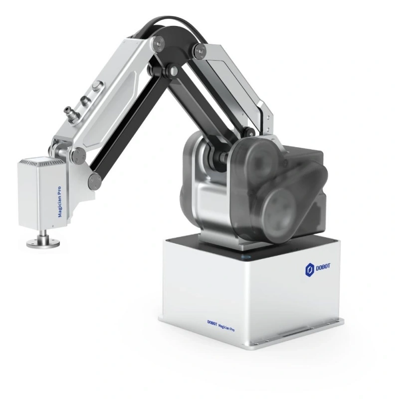
Dobot MG400
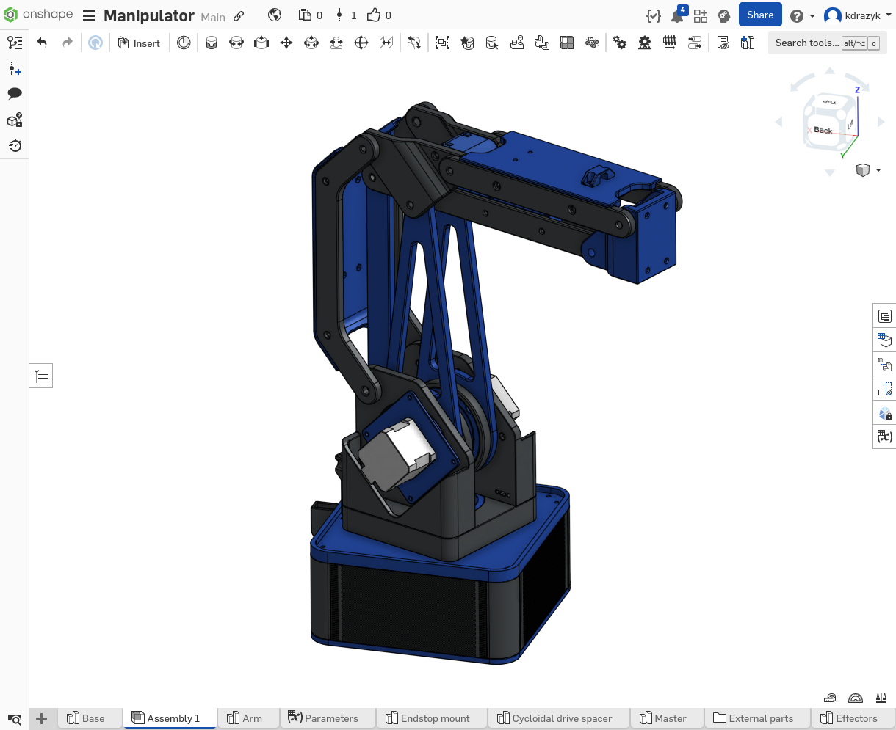
Projekt manipulatora 3R
w programie Onshape
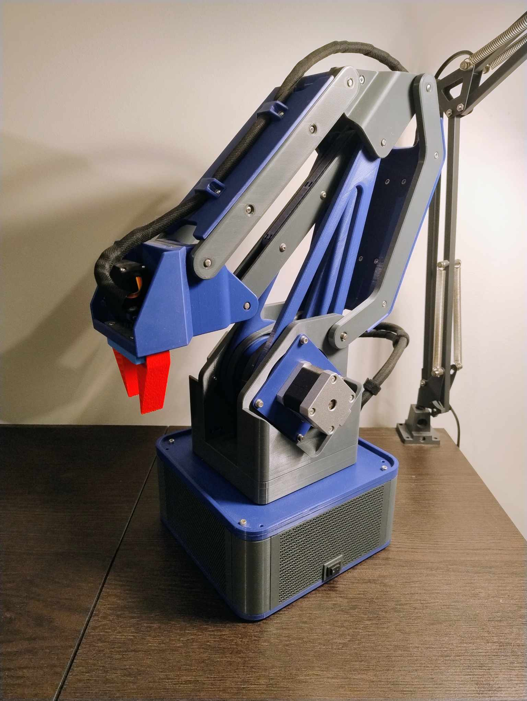
Manipulator 3R
z elastycznym chwytakiem
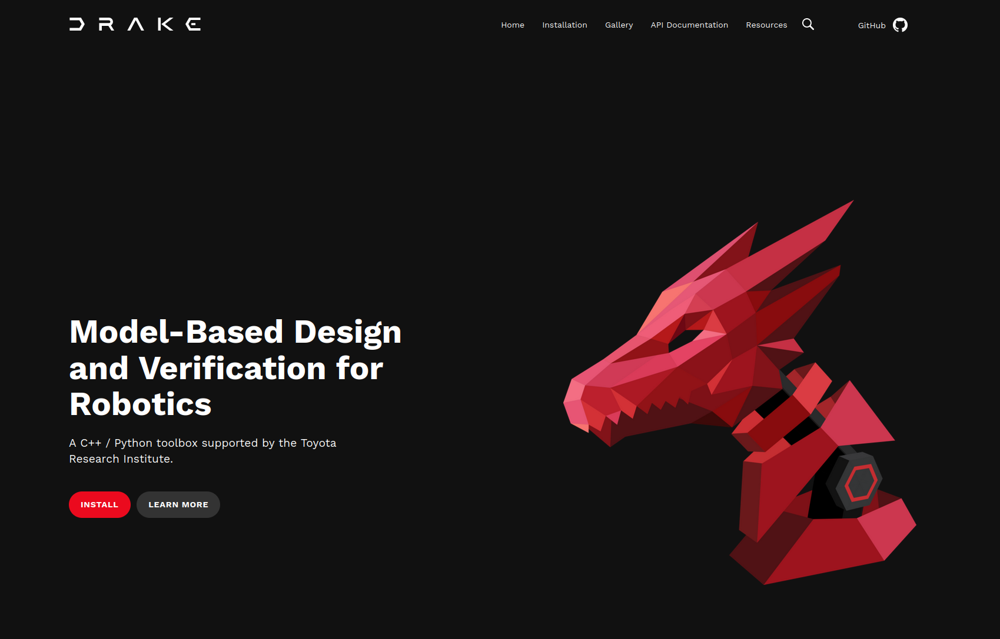
Drake - zestaw narzędzi symulacyjnych autorstwa
MIT Robot Locomotion Group
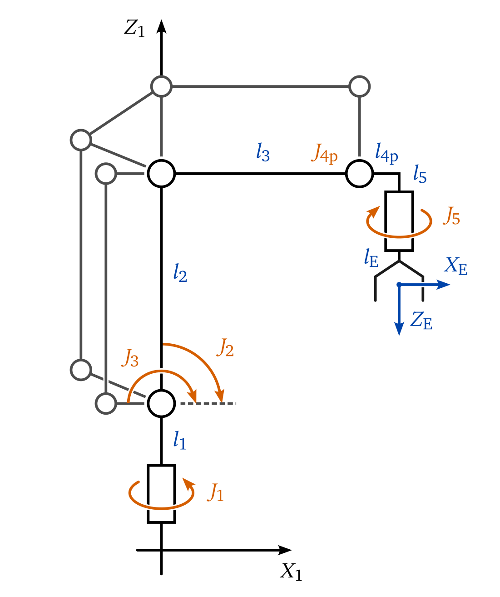
Schemat kinematyki manipulatora z przegubami równoległymi
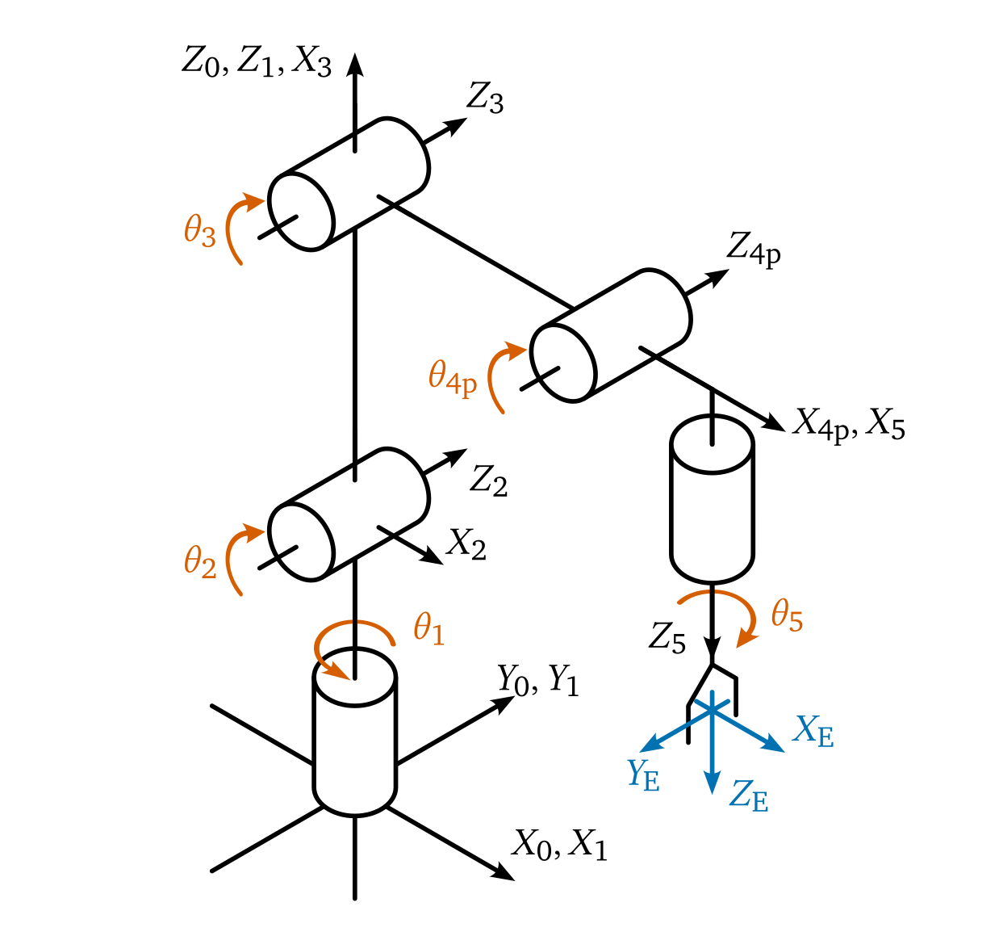
Schemat kinematyki równoważnego manipulatora szeregowego
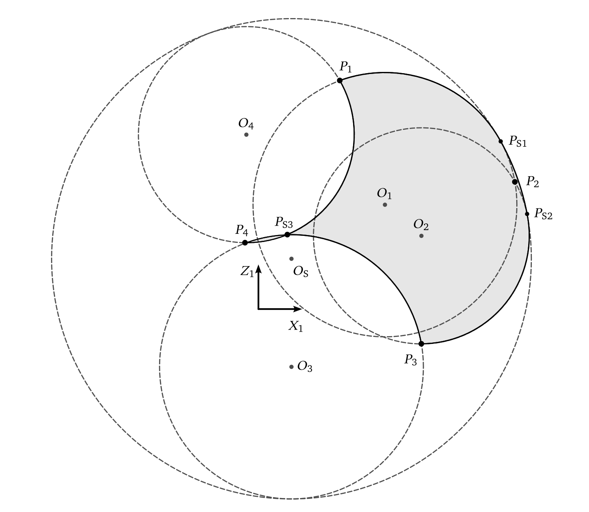
Przekrój pola roboczego manipulatora
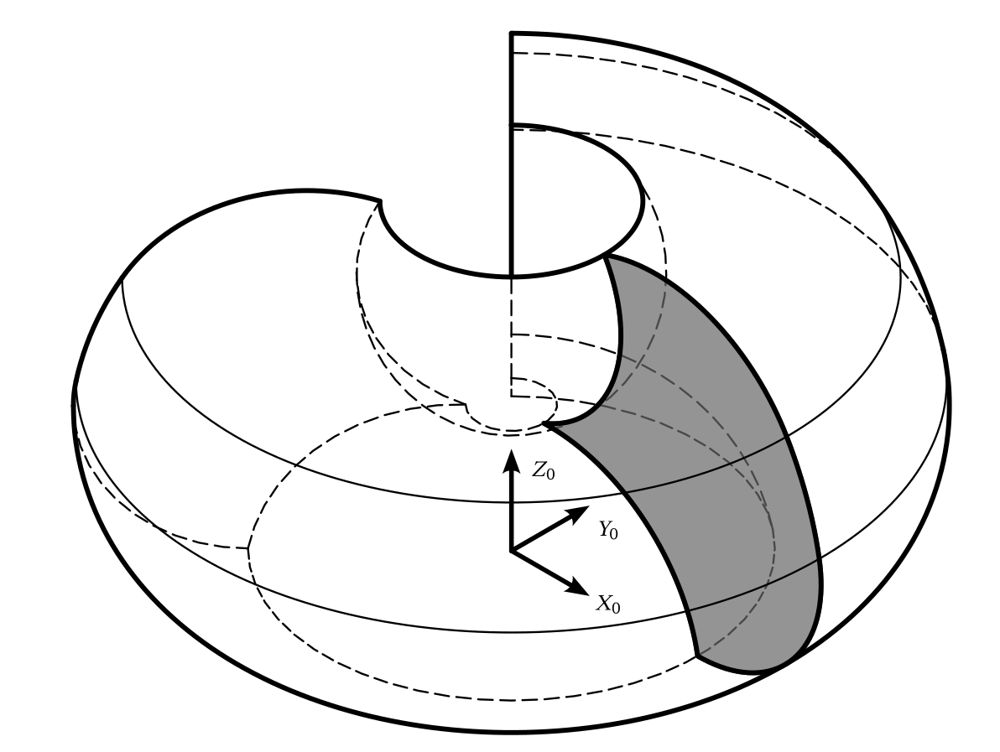
Pole robocze manipulatora
w izometrii
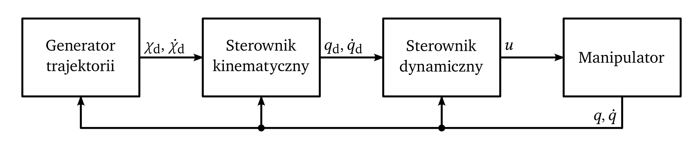
Ogólny diagram układu regulacji
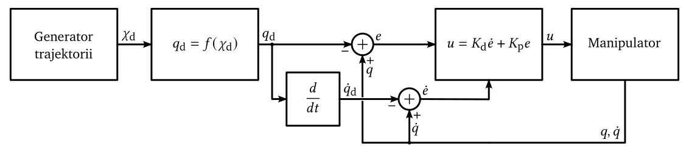
Diagram układu regulacji dla pracy automatycznej
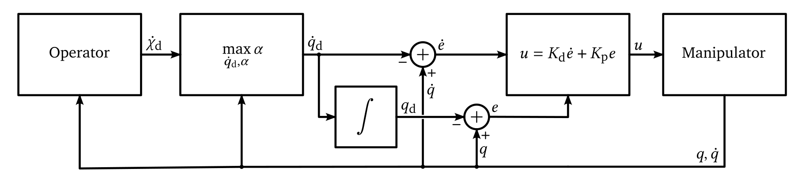
Diagram układu regulacji dla teleoperacji
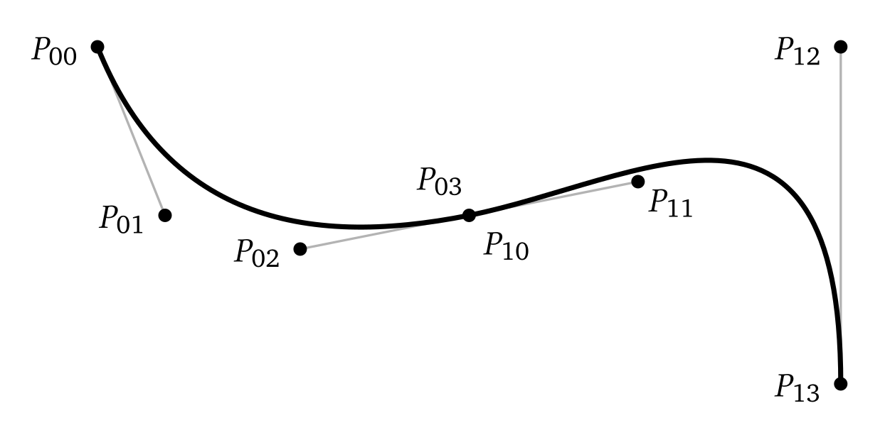
Krzywa B-sklejana złożona z dwóch krzywych Béziera stopnia trzeciego
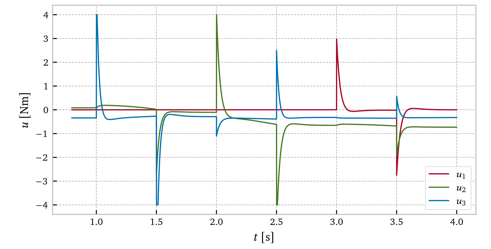
Wykres sterowań dla trajektorii klasy C0
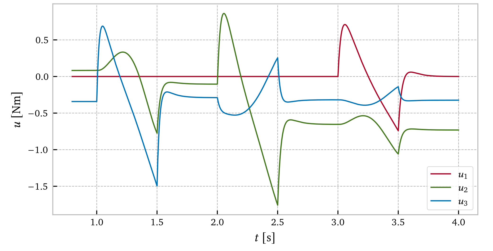
Wykres sterowań dla trajektorii klasy C1
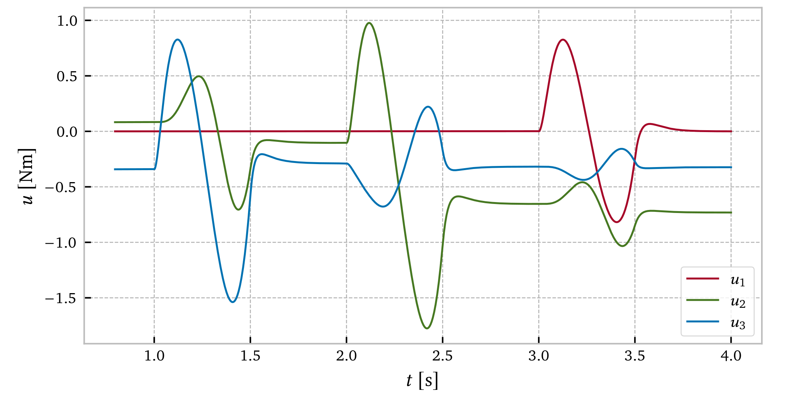
Wykres sterowań dla trajektorii klasy C2
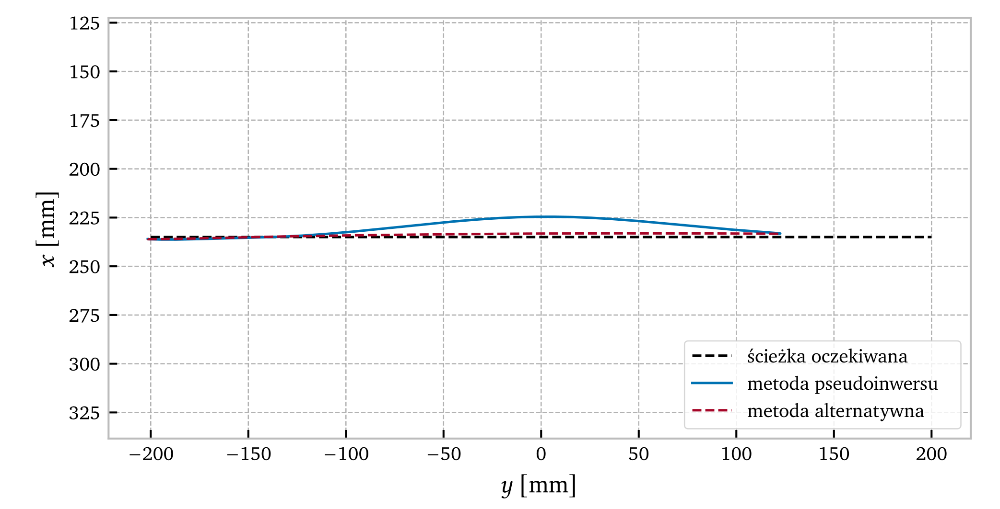
Porównanie sterowników kinematycznych przy niewielkim ograniczeniu prędkości przegubowej
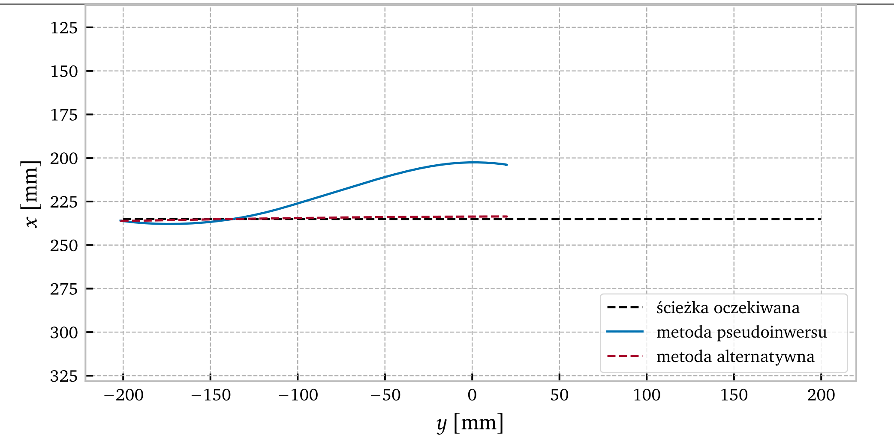
Porównanie sterowników kinematycznych przy znaczącym ograniczeniu prędkości przegubowej
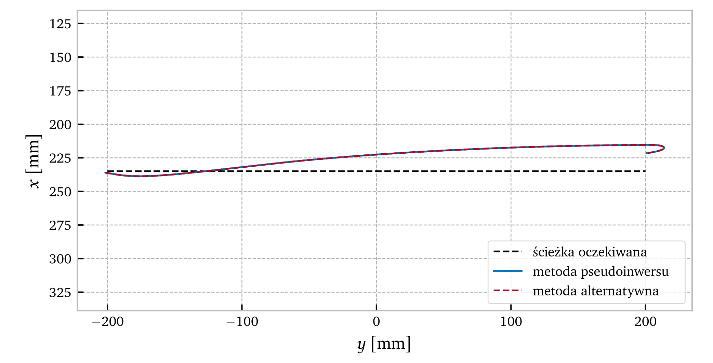
Porównanie sterowników kinematycznych działających bez ograniczeń z wysoką prędkością ruchu